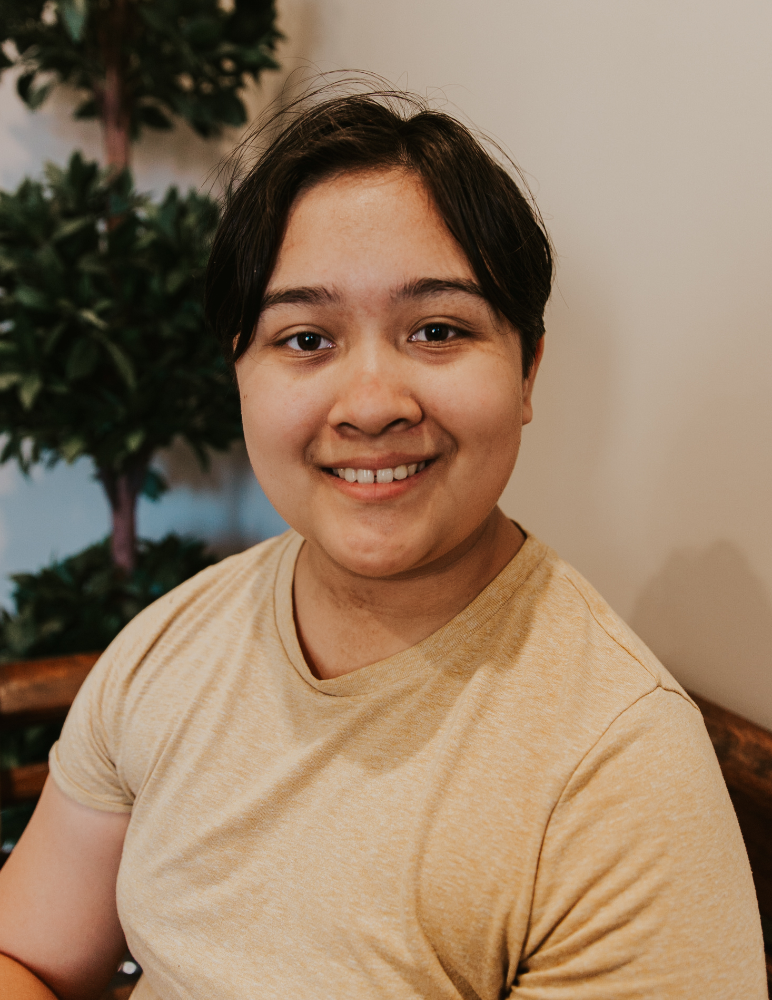

My name is Kristina Mason and I'm a student at Oregon State University.
I'm majoring in Computer and Electrical Engineering, and I'm minoring in Computer Science.
I have an interest in anything computer related and I'm always interested in learning new things.
The things I'm interested in learning aren't limited to computers and I will commit to learning as much as I can on the job.
I am a quiet individual, but I am very hard-working and am able to communicate effectively with others, if I can find you while
working. I am always looking for ways to improve myself and my code. I can take critisism and learn from it, without feeling
hurt.
Right now, since I have free access to LinkedIn Learning, I'm learning about COBOL and other things about computers to broaden
what I know.